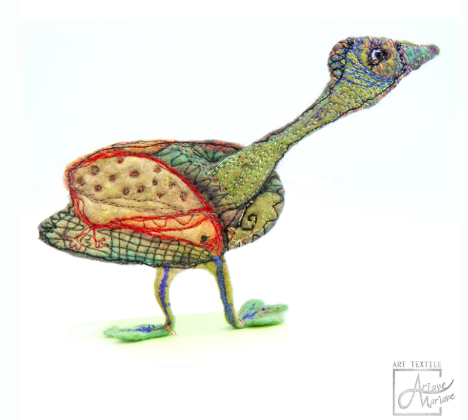
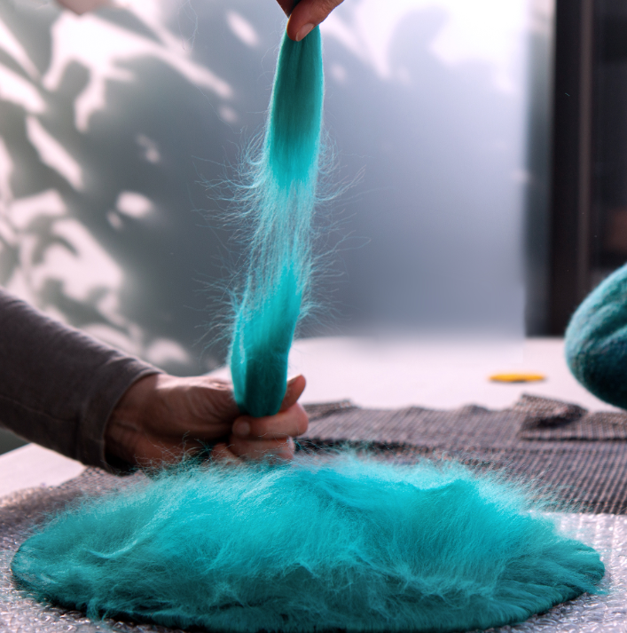

Retraites
About My First Experience of Hosting a Vacancy With an Artist : a Creative Retreat That Touched My Heart
Un résumé court

Réflexions sur l'art, la Gestalt-thérapie et la créativité

Retraites
Un résumé court

Retraites
Qu’est-ce que la laine feutrée ?

En ligne
Quelques repères simples pour s'installer, se sentir en confiance et profiter pleinement d'un accompagnement à distance.

Retraites
Une journée type au cœur de la vallée du Loir : matières, silence, création collective et retour à soi.

Processus créatif
Pourquoi la broderie, plus que tout autre médium, m'aide à faire émerger ce qui ne se dit pas encore avec des mots.

Réflexion
Ralentir, point après point : comment un geste répétitif rejoint les principes fondamentaux de la Gestalt-thérapie.

Fondamentaux
Un éclairage simple sur cette approche qui combine création intuitive et attention à ce qui se vit ici et maintenant.

Groupe
Ce que la présence des autres change dans un processus créatif et thérapeutique, même à travers un écran.